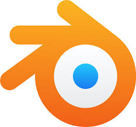

Sobre MI
Desarrollador de Videojuegos
-
Información Personal:
Me llamo Juan Diego Gomez, tengo 18 años y actualmente trabajo como Desarrollador de Videojuegos. Resido en Resistencia,Chaco.
-
Hobbies/Intereses:
Me gusta jugar videojugos,compartir con amigos y sumarme a nuevas experiencias. Disfruto de ver y jugar al futbol y también me entretengo con pasatiempos creativos como diseñar/Dibujar
Gustos que Definen Mi Estilo de Vida:
- Comida: Disfruto de platos caseros, aunque mi comida favorita son las hamburguesas.
- Color: Mi color favorito es el Rojo.
- Música: Escucho todo tipo de musica sin embargo mi artista favorito por el momento es tiago pzK.
-
Habilidades Diferenciales
Modelado y Diseño 3d:
- Manejo varios sistemas/motores de modelado 3d como son Voxeledit,blender,zetabrush y sustance painter 
- Manejo de diferentes programas de edicion de videos como premier, after effects y adobe audicion. Aqui algunos videos mios o conparticipacion de mi parte Con participacion mia
- Poseo un conocimiento basico de python y c#, ademas e trabajando con varios de motores de videojuegos como unity,godot y construct
![Foto de [Tu Nombre]](descarga(1).png)